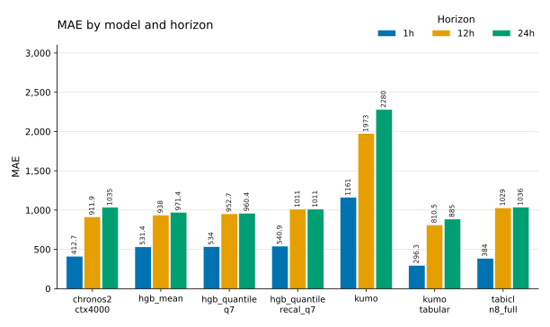
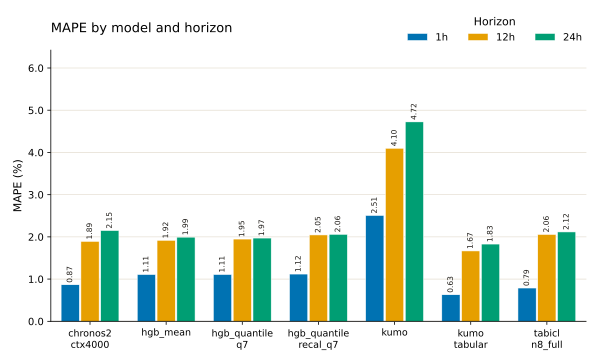
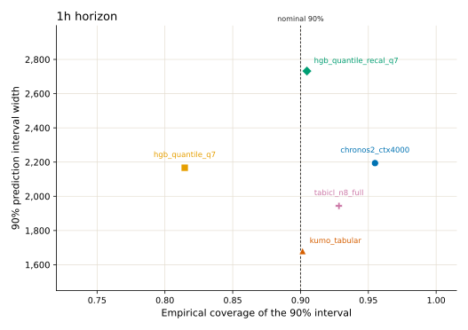
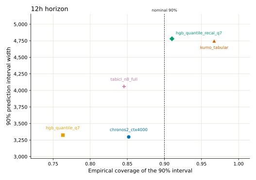
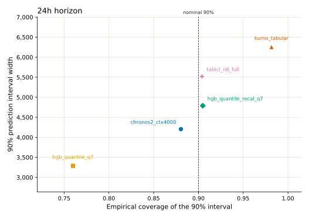
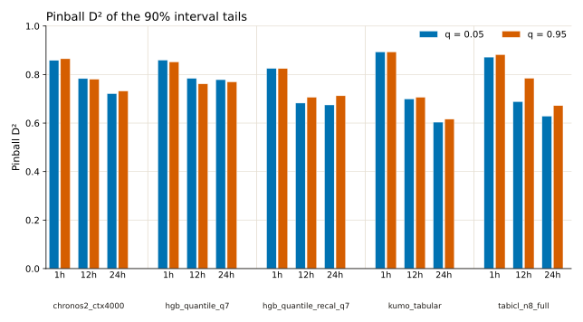

Walk-forward CV metric plots
These figures restate the pooled metrics from the walk-forward CV comparison. Each number pools every row across the 8 CV folds. MAE and MAPE use the median prediction where the model has quantiles. Coverage, interval width, and pinball D² use the published quantiles. hgb_mean and kumo have no quantiles in that table, so they appear only in the point-error plots.
The plots show the 1h, 12h, and 24h horizons. The source table also reports an average slice; those values are in the tables below.
MAE and interval width are in the load units of the source table. The MAPE figure shows percent; the table keeps the source fractions.
Point error
kumo_tabular has the lowest MAE and MAPE at 1h, 12h, and 24h. At 1h its MAE is 296.3, ahead of tabicl_n8_full (384) and chronos2_ctx4000 (412.7). The three histogram gradient boosting models sit together at 1h (531.4 to 540.9). kumo is about twice that, at 1161.
At 24h the field behind kumo_tabular tightens. Its MAE is 885, then hgb_quantile_q7 at 960.4, hgb_mean at 971.4, and hgb_quantile_recal_q7 at 1011. chronos2_ctx4000 (1035) and tabicl_n8_full (1036) are next to each other. kumo is 2280.
Recalibrating the quantile model raises MAE at every horizon: hgb_quantile_recal_q7 versus hgb_quantile_q7 is 540.9 versus 534 at 1h, 1011 versus 952.7 at 12h, and 1011 versus 960.4 at 24h.
MAPE ranks the models in the same order as MAE at each of these horizons.


MAE
| model | 1h | 12h | 24h | average |
|---|---|---|---|---|
| chronos2_ctx4000 | 412.7 | 911.9 | 1035 | 786.6 |
| hgb_mean | 531.4 | 938 | 971.4 | 813.6 |
| hgb_quantile_q7 | 534 | 952.7 | 960.4 | 815.7 |
| hgb_quantile_recal_q7 | 540.9 | 1011 | 1011 | 854.2 |
| kumo | 1161 | 1973 | 2280 | 1805 |
| kumo_tabular | 296.3 | 810.5 | 885 | 664 |
| tabicl_n8_full | 384 | 1029 | 1036 | 816.2 |
MAPE
| model | 1h | 12h | 24h | average |
|---|---|---|---|---|
| chronos2_ctx4000 | 0.008655 | 0.01892 | 0.02148 | 0.01635 |
| hgb_mean | 0.01107 | 0.01917 | 0.01993 | 0.01672 |
| hgb_quantile_q7 | 0.01108 | 0.01948 | 0.01971 | 0.01676 |
| hgb_quantile_recal_q7 | 0.01119 | 0.02046 | 0.0206 | 0.01742 |
| kumo | 0.02506 | 0.04098 | 0.04723 | 0.03776 |
| kumo_tabular | 0.006284 | 0.01667 | 0.0183 | 0.01375 |
| tabicl_n8_full | 0.007879 | 0.02057 | 0.02117 | 0.01654 |
Interval width and coverage
On these plots a calibrated sharp 90% interval sits on the dashed line and low on the width axis. Each panel has its own width scale, because interval width grows with the horizon.
At 1h, kumo_tabular is on the nominal coverage (0.9015) with the narrowest interval (1680). tabicl_n8_full is somewhat conservative (0.9283) and still narrower than Chronos-2 and both HGB quantile models. hgb_quantile_q7 undercovers (0.8146) at a width close to Chronos-2 (2167 versus 2194). Recalibration moves that model to 0.9047 and widens the interval to 2732. Chronos-2 overcovers (0.9549) at width 2194.
At 12h, hgb_quantile_q7 and chronos2_ctx4000 have the narrowest intervals (3325 and 3297) and both undercover (0.7631 and 0.8519). tabicl_n8_full undercovers as well (0.8456) at width 4059. Recalibration reaches 0.9102 at width 4780, next to kumo_tabular, which overcovers (0.9671) at width 4747.
At 24h, hgb_quantile_q7 is again the narrowest (3288) and the furthest under the nominal coverage (0.7599). Chronos-2 is closer to the line (0.8804) at width 4204. Recalibration lands on 0.9048 at width 4789. tabicl_n8_full is on the nominal coverage (0.904) and wider (5519). kumo_tabular overcovers (0.9816) with the widest interval (6256).



Coverage of the 90% interval
| model | 1h | 12h | 24h | average |
|---|---|---|---|---|
| chronos2_ctx4000 | 0.9549 | 0.8519 | 0.8804 | 0.8957 |
| hgb_quantile_q7 | 0.8146 | 0.7631 | 0.7599 | 0.7792 |
| hgb_quantile_recal_q7 | 0.9047 | 0.9102 | 0.9048 | 0.9066 |
| kumo_tabular | 0.9015 | 0.9671 | 0.9816 | 0.9501 |
| tabicl_n8_full | 0.9283 | 0.8456 | 0.904 | 0.8927 |
Width of the 90% interval
| model | 1h | 12h | 24h | average |
|---|---|---|---|---|
| chronos2_ctx4000 | 2194 | 3297 | 4204 | 3232 |
| hgb_quantile_q7 | 2167 | 3325 | 3288 | 2926 |
| hgb_quantile_recal_q7 | 2732 | 4780 | 4789 | 4100 |
| kumo_tabular | 1680 | 4747 | 6256 | 4228 |
| tabicl_n8_full | 1944 | 4059 | 5519 | 3841 |
Pinball D² of the 90% interval
Pinball D² at q = 0.05 and q = 0.95 scores the two tails that bound the 90% interval. Higher is better. Bars are grouped by model, then by horizon, then by that quantile pair. The median quantile (q = 0.5) is a point-forecast score; its values are in the table and are left off the figure.
At 1h, kumo_tabular leads both tails (0.8932 and 0.8933). At 12h, chronos2_ctx4000 (0.7833 and 0.7807) and hgb_quantile_q7 (0.784 and 0.7615) lead, and kumo_tabular falls to about 0.70. At 24h, hgb_quantile_q7 leads both tails (0.7789 and 0.7696), ahead of Chronos-2 (0.7211 and 0.7318). kumo_tabular is last at 24h (0.6036 and 0.6158).
tabicl_n8_full is uneven at 12h: q = 0.95 is 0.7847, in line with the leaders, while q = 0.05 is 0.6884.
Recalibration lowers pinball D² relative to hgb_quantile_q7 at every horizon and both tails. The coverage plots show the corresponding change: empirical coverage moves from about 0.76–0.81 onto 0.90, and the interval gets wider.

Tail pinball D² (q = 0.05 and q = 0.95)
| model | 1h 0.05 | 1h 0.95 | 12h 0.05 | 12h 0.95 | 24h 0.05 | 24h 0.95 | avg 0.05 | avg 0.95 |
|---|---|---|---|---|---|---|---|---|
| chronos2_ctx4000 | 0.8582 | 0.8652 | 0.7833 | 0.7807 | 0.7211 | 0.7318 | 0.8523 | 0.903 |
| hgb_quantile_q7 | 0.8594 | 0.8519 | 0.784 | 0.7615 | 0.7789 | 0.7696 | 0.8295 | 0.8759 |
| hgb_quantile_recal_q7 | 0.8252 | 0.8246 | 0.6825 | 0.7064 | 0.6747 | 0.7125 | 0.8405 | 0.8852 |
| kumo_tabular | 0.8932 | 0.8933 | 0.6993 | 0.7063 | 0.6036 | 0.6158 | 0.8578 | 0.9057 |
| tabicl_n8_full | 0.8719 | 0.882 | 0.6884 | 0.7847 | 0.6285 | 0.6718 | 0.8416 | 0.9006 |
Median pinball D² (q = 0.5)
| model | 1h | 12h | 24h | average |
|---|---|---|---|---|
| chronos2_ctx4000 | 0.9487 | 0.8866 | 0.8712 | 0.9021 |
| hgb_quantile_q7 | 0.9336 | 0.8815 | 0.8805 | 0.8985 |
| hgb_quantile_recal_q7 | 0.9327 | 0.8743 | 0.8742 | 0.8937 |
| kumo_tabular | 0.9631 | 0.8992 | 0.8899 | 0.9174 |
| tabicl_n8_full | 0.9522 | 0.8721 | 0.8711 | 0.8985 |
Reading the three views together
kumo_tabular is the best point forecast at 1h, 12h, and 24h. Its 1h interval is on the nominal 90% coverage, the narrowest of the five quantile models, and the best 1h tail D². At 24h the same model has the widest interval, coverage 0.982, and the lowest tail D².
hgb_quantile_q7 is a middling point forecast at 1h and the strongest 24h interval on tail D², with the narrowest 24h band and coverage near 0.76. hgb_quantile_recal_q7 is the model whose coverage stays near 0.90 at all three horizons. That calibration comes with higher MAE and lower tail D² than hgb_quantile_q7.
Reproduce
From electricity_load_cv_plots, with pixi:
pixi run plotThe script reads data/cv_metrics.json, which was copied from the published table, and writes the SVG figures next to this report.